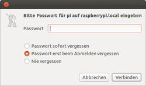
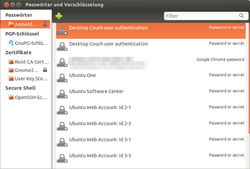
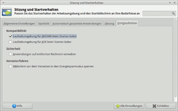

GNOME Schlüsselbund
Dieser Artikel wurde für die folgenden Ubuntu-Versionen getestet:
Ubuntu 14.04 Trusty Tahr
Zum Verständnis dieses Artikels sind folgende Seiten hilfreich:
Der GNOME-Schlüsselbund dient zur sicheren Speicherung und Verwaltung von Passwörtern. Er wird von einer zunehmenden Zahl GNOME-Anwendungen genutzt. Passwörter werden verschlüsselt gespeichert und mit einem Masterpasswort geschützt. So braucht man sich nicht jedes einzelne Passwort zu merken und kann sich wiederholte Passworteingaben sparen. Ein Auslesen der Passwörter ist auch beispielsweise nach dem Diebstahl eines Notebooks nicht möglich. Allerdings sollte das Masterpasswort eine hohe Qualität haben und für niemanden zugänglich sein.
Seahorse übernimmt die Verwaltung des GNOME Schlüsselbundes. In Xubuntu kann Seahorse aus den Quellen installiert werden.
Installation¶
Bei einer Standard-Ubuntu-Installation ist der Schlüsselbund bereits vorinstalliert. Ansonsten muss das Paket

gnome-keyring
 mit apturl
mit apturl
Paketliste zum Kopieren:
sudo apt-get install gnome-keyring
sudo aptitude install gnome-keyring
installiert [1] werden.
Anwendung¶
Wenn im Dialog zur Passworteingabe (beispielsweise beim Zugriff auf eine Netzwerkfreigabe) die Option "Für immer erinnern" aktiviert ist, werden die Daten im Schlüsselbund gespeichert.
Erste Anwendung¶
Eine Einrichtung bei der ersten Speicherung eines Passwortes ist nicht nötig. Das Masterpasswort wird nach der Installation standardmäßig auf das Passwort des Benutzers gesetzt.
Nutzung eines gespeicherten Passworts¶
Fordert eine Anwendung ein gespeichertes Passwort an, weil man beispielsweise wieder auf dieselbe Netzwerkfreigabe zugreift, muss das Masterpasswort eingegeben werden. Greift eine Anwendung auf einen bereits mit dem Masterpasswort "geöffneten" Schlüsselbund zu, muss dies nochmals erlaubt werden:
Verwaltung¶

Die gespeicherten Daten können über
"System -> Einstellungen -> Passwörter und Verschlüsselung"
eingesehen und bearbeitet werden. Hier können Anwendungen bestimmt werden, die auf einen Schlüssel keinen Zugriff mehr bekommen sollen, weitere Schlüsselbünde hinzugefügt werden usw.
Falls kein Menü-Eintrag vorhanden ist, kann man das Programm auch über " Alt + F2 -> seahorse" starten.
Schlüsselbund unter Xfce automatisch öffnen¶

Damit dies auch unter der Desktopumgebung Xfce funktioniert, muss diese beim Starten einige Dienste von GNOME wie z.B. den Schlüsselbund automatisch laden. Dies kann man unter
"Anwendungsmenü -> Einstellungen -> Sitzung und Startverhalten -> Fortgeschritten"
über das Aktivieren der Option "Laufzeitumgebung für Gnome beim Starten laden" einstellen. Sobald die Option aktiviert ist und man sich neu angemeldet hat, so klappt das Aufsperren des Schlüsselbundes.
Keyring-Daemon deaktivieren¶
Möchte man den gnome-keyring-daemon deaktivieren, so dass er nicht bei jedem Systemstart durch GDM bzw. LightDM automatisch gestartet wird, muss man in einem Editor [2] mit Root-Rechten die folgenden zwei Zeilen aus der Datei /etc/pam.d/gdm respektive /etc/pam.d/lightdm entfernen:
auth optional pam_gnome_keyring.so session optional pam_gnome_keyring.so auto_start
Passwort ändern¶
Hinweis:
Das Passwort des Benutzers muss nicht unbedingt mit dem Passwort des Schlüsselbundes übereinstimmen. Normalerweise ist es aber sinnvoll, die Passwörter für die Benutzeranmeldung und den Schlüsselbund "login" gleichlautend zu halten. Nur dann ist es dem System möglich, beide Anmeldungen mit nur einer Passwortabfrage durchzuführen.
Wurde die Option "automatisch anmelden" gewählt (in "Systemeinstellungen -> Benutzer") - dieser Automatismus bezieht sich nur auf die Benutzeranmeldung - so unterbleibt zwar die erste der beiden Anmeldungen. Zur Freischaltung des Schlüsselbundes ist dann aber weiterhin die Eingabe eines Passworts notwendig. Um auch diese Abfrage zu umgehen, muss das Passwort des Schlüsselbundes auf "leer" geändert werden.
Dem Benutzer sollte klar sein, dass dann alle im Bund gespeicherten Daten nach der automatischen Anmeldung von jedem mit physischem Zugriff auf den Computer einsehbar sind. Außerdem sind die Daten in diesem Fall unverschlüsselt auf der Festplatte gespeichert, sofern Home-Verzeichnis oder Dateisystem nicht selbst verschlüsselt sind.
Das Passwort für den Schlüsselbund lässt sich wie folgt ändern:
Man startet die Schlüsselverwaltung unter
"Anwendungen -> Zubehör -> Passwörter und Verschlüsselung"
Falls die Schlüsselverwaltung nicht vorhanden ist, muss Seahorse nachinstalliert werden.
Im Reiter "Passwörter" öffnet man mit einem  -Klick auf "Passwörter:login" ein Kontextmenü und wählt dann den Eintrag "Passwort ändern".
-Klick auf "Passwörter:login" ein Kontextmenü und wählt dann den Eintrag "Passwort ändern".
Schlüsselbund in anderen Desktopumgebungen automatisch entsperren¶
Möchte man den GNOME Schlüsselbund auch automatisch mit anderen Loginmanagern entsperren lassen, reicht der Zusatz in der entsprechenden PAM-Datei unter /etc/pam.d/, wie unter Keyring-Daemon deaktivieren beschrieben - mit dem Unterschied, dass nun diese zwei Zeilen hinzugefügt werden müssen. Dabei spielt die Reihenfolge eine Rolle. Nachfolgend ein Beispiel für KDM in der Datei /etc/pam.d/kdm:
# # /etc/pam.d/kdm - specify the PAM behaviour of kdm # auth required pam_nologin.so auth required pam_env.so readenv=1 auth required pam_env.so readenv=1 envfile=/etc/default/locale @include common-auth session required pam_limits.so auth optional pam_gnome_keyring.so @include common-account @include common-session session optional pam_gnome_keyring.so auto_start @include common-password
Problembehebung¶
Automatisches Öffnen bei automatischer Anmeldung¶
Anwender sind oft irritiert, dass eine Passwortabfrage erfolgt, obwohl die Funktion "automatisch anmelden" gewählt wurde. Grund und Lösung ist im Abschnitt Passwort ändern beschrieben.
Passwörter zurücksetzen¶
Ist ein Passwort-Reset nötig, z.B. weil man das Master-Passwort des Schlüsselbunds vergessen hat, setzt ein Löschen der Datei ~/.local/share/keyrings/Standard-Schlüsselbund.keyring alle Passwörter und Einstellungen des Schlüsselbunds zurück. Dadurch verliert man aber auch alle im Schlüsselbund gespeicherten Passwörter!
Testweises Umbenennen vor dem endgültigen Löschen (neuer Name login.keyring.backup):
mv ~/.gnome2/keyrings/login.keyring ~/.gnome2/keyrings/login.keyring.backup
Löschen:
rm ~/.gnome2/keyrings/login.keyring # oder ggf. login.keyring.backup
Doppelte Passworteingabe unter Lubuntu¶
Werden unter Lubuntu GNOME-Programme installiert, die auf den GNOME-Schlüsselbund zugreifen, öffnet sich bei Anmeldung an Lubuntu das Schlüsselbund-Fenster mit der Bitte nach erneuter Authentifizierung.
Dies kann unterbunden werden durch:
Installieren von lib-pam-gnome-keyring:
libpam-gnome-keyring
mit apturl
Paketliste zum Kopieren:
sudo apt-get install libpam-gnome-keyring
sudo aptitude install libpam-gnome-keyring
Abmelden von Lubuntu
Anmelden an Lubuntu. Password Dialog öffnet sich nach kurzer Zeit
Nun erscheint die zusätzliche Option, die zu aktivieren ist: "Automatically unlock this keyring whenever I'm logged in" bzw. "Diesen Schlüsselbund beim Anmelden automatisch entsperren"
Passwort eingeben und entsperren des Schlüsselbundes
Siehe auch 1034108.
- Erstellt mit Inyoka
-
 2004 – 2017 ubuntuusers.de • Einige Rechte vorbehalten
2004 – 2017 ubuntuusers.de • Einige Rechte vorbehalten
Lizenz • Kontakt • Datenschutz • Impressum • Serverstatus -
Serverhousing gespendet von